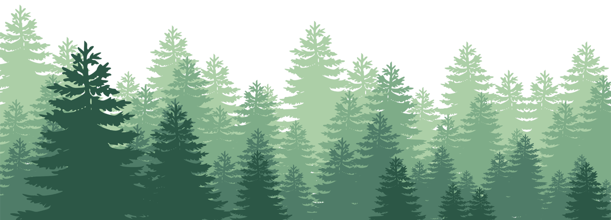
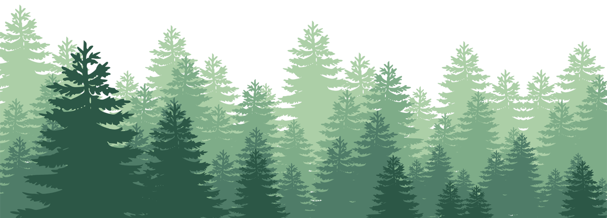

I'm Steve
a Geospatial Developer



I'm a GIS Analyst and an aspiring Web Developer! I love learning new things, enjoying time with my family, and playing video games. 🎮

I graduated from Florida State University with a Bachelor of Science in Geography and Environmental Studies in 2016. After I graduated with my bachelor's degree I decided that I wasn't done with school and pursued a Master of Science in Geographic Information Science and graduated in August 2017. Since then I have spent my time being a Super Dad, being a lifelong student, enjoying video games on both PC and console, and working as a GIS Analyst.

I've been a avid gamer as long as I have been on this Earth! My favorite games are the Halo:Combat Evolved franchise which I have been playing since 2001 and World of Warcraft which I have been playing since 2005.
Need a GIS professional or want to play Halo or World of Warcraft? Let's talk!
CONTACT ME